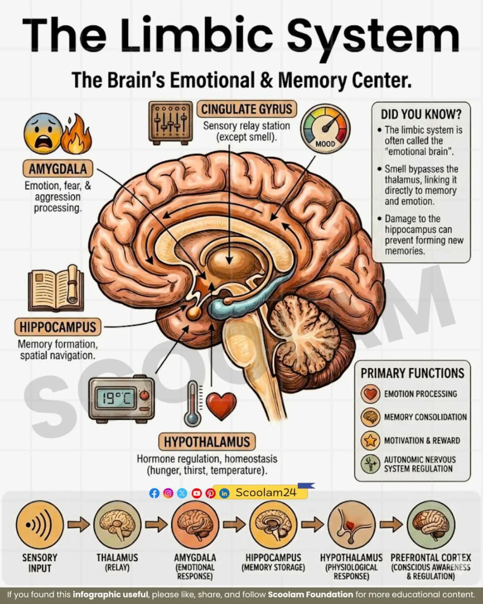
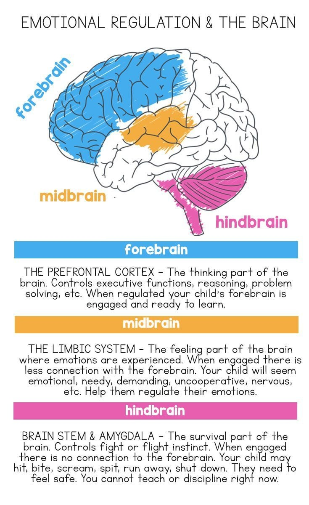
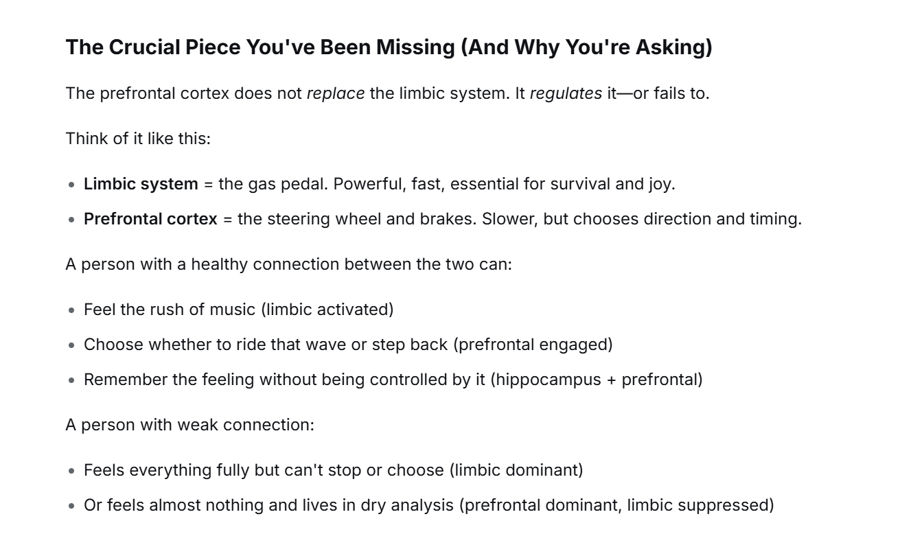

The Second Room
That led me here: a quiet guide about your brain’s two rooms, why feelings return, and how awareness changes everything.
I'm not a doctor or neuroscientist. Just someone who paid attention.
⚡ The parallel universe
Music, sports, propaganda, rituals — they all speak directly to a deep, fast part of your brain. That part is powerful, alive, and can feel like the only reality. It's not bad. But it's not the whole story.
Most people live mostly in one room and don’t know the other exists. The goal is not to kill emotion — it's to hold the switch.

🌀 The trap: why feelings keep coming back
You've heard "feelings are temporary". True — but they return. Without awareness, recurrence feels like permanence. You think: "I'm back where I started". But that’s just your brain revisiting a well-worn path.
🏞️ Two kinds of environments
We live in a society where some environments let you survive using the limbic system alone. Others demand the prefrontal cortex. This explains so much — why some people never "need" to change, and others are forced to adapt.
Intense tribal bonds, repetitive work, constant entertainment, trauma-saturated settings — no need for long-term planning.
Complex problem solving, strategic roles, information-dense work, silence — you must self-regulate.
Most people believe their own environment is normal. That's why perspectives clash so hard.
🔁 The loop & the switch
You can train your brain, just like metabolism: the more you practice shifting from emotional-automatic to aware-observer, the easier it gets.
- Without awareness: feeling returns → "nothing changed" → despair → limbic deepens.
- With awareness: feeling returns → "ah, this old pathway" → recognition → prefrontal strengthens.

🕯️ How to practice the switch
Small, concrete steps. No need to become a monk.
- Abstain — choose one thing (music, news, social media, background noise) for 24–48 hours.
- Notice the discomfort — restlessness? boredom? that's your limbic system asking for input.
- Sit in silence — 5–10 minutes. Let the prefrontal cortex hum.
- Return with choice — go back to music or whatever you love, but this time notice: you are entering the parallel universe, not being taken by it.
Repeat. Over time, switching becomes fluid. You keep the passion, but you hold the reins.
🕊️ If you're carrying too much
Dear you,
I'm not going to tell you "it gets better" because I don't know your story. What I can tell you is this: the pain you're feeling is real, but it lives in a part of your brain that doesn't have language — it screams without words. The fact that you're reading these sentences means another part of you is still online: the observer, the one who can wait, who can choose, who can stay.
Feelings return — but that doesn't mean you are back at zero. The room you're in right now is not the only room. There is a second room, and you can find the door step by step. You don't have to feel better today. Just stay. And maybe come back here tomorrow.
📞 If you need to talk to someone right now:
- UK: Samaritans — Call 116 123 (free, 24/7)
- UK (Crisis Text Line): Text "SHOUT" to 85258
- US: 988 Suicide & Crisis Lifeline — Call or text 988
- Other countries: Visit Befrienders Worldwide to find a local helpline
This site is not a replacement for professional care. But it's here as a companion.
🎭 The regulators: music, religion, sports, media
All these tools influence the limbic system — sometimes beautifully, sometimes to control. Awareness doesn't mean rejecting them. It means seeing them clearly.
Reward, trance, time distortion — a parallel universe.
Ritual, awe, moral weight — ancient limbic regulation.
Tribal bonding, rhythmic emotional spikes.
Once you see how they work, you can choose to engage — or step back.
🌿 The environment test (no scores, just gentle questions)
- Do you need music or noise to be alone with your thoughts?
- Do you make most decisions based on how you feel right now vs. a plan you made earlier?
- Can you sit in silence for 10 minutes without strong discomfort?
- When a strong emotion returns, do you believe you're "back to square one"?
These aren't pass/fail. They are signposts. The more you notice, the more you can navigate between the two rooms.

✧ Last thing — the returning feeling
You might think: "I understood that feelings are temporary, but they keep coming back — maybe they never left?"
No. They left, then reappeared. The neural pathway is still there. That's not failure, that's biology. Awareness lets you say: "Oh, this again. I know how to move through this." That small shift changes everything.
🧭 share the map 🧾 back to top